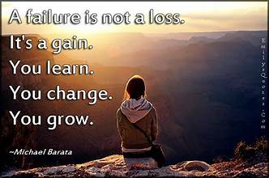
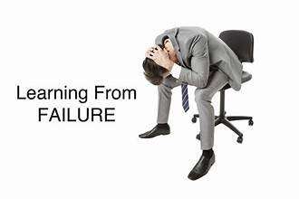

Adapt and Learn from Failure:
Adaptation and learning from failure are integral components of personal growth and success. In life, setbacks and failures are inevitable, but they need not be roadblocks; they can serve as stepping stones toward achievement. Embracing the ability to adapt and glean valuable insights from failures is what sets resilient individuals apart.

Adaptation entails being flexible and open to change, adjusting strategies when faced with unexpected challenges, and remaining undeterred by initial disappointments. It means recognizing that circumstances evolve and that one must be willing to evolve with them to achieve their goals.

Learning from failure involves analyzing what went wrong, understanding the root causes, and using those lessons to improve future efforts. It encourages a growth mindset, emphasizing that failures are not reflections of one's worth but opportunities for growth and improvement.
Individuals who embrace adaptation and learning from failure often find themselves more innovative, resourceful, and persistent. They build resilience, cultivate problem-solving skills, and develop the ability to bounce back from adversity with greater strength and determination.

In summary, adaptation and learning from failure are not signs of weakness but indicators of strength and wisdom. They are the cornerstones of personal and professional development, enabling individuals to grow, succeed, and thrive in the face of life's inevitable challenges. By doing so, they turn setbacks into stepping stones and use failures as fuel for future success.